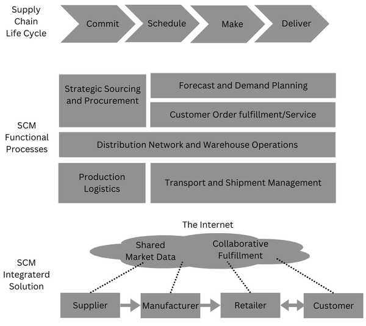

An enterprise is a large organization or company that operates in various commercial, industrial, or
professional activities to generate profit.
Enterprise Resource Planning (ERP) is a type of software that organizations use to manage their
day-to-day business activities, such as accounting, procurement, project management, risk management and
compliance, and supply chain operations. A complete ERP suite also includes enterprise performance
management, which helps plan, budget, predict, and report on an organization’s financial results.
Example: Imagine a company called Fresh Milk that sells milk. Fresh Milk uses an ERP system to
manage its various operations:
Accounting: Tracks all the financial transactions, generates invoices, processes
payroll, and manages budgets.
Procurement: Manages the process of purchasing supplies and raw materials needed for
production.
Inventory Management: Keeps track of stock levels, orders new supplies when needed, and
monitors expiration dates.
Sales and Customer Service: Processes orders, manages customer relationships, and tracks
sales data.
Production Planning: Schedules the production of milk, ensuring that there is enough
supply to meet customer demand without overproducing.
Supply Chain Management: Coordinates the movement of goods from suppliers to the
warehouse to customers.
By using an ERP system, Fresh Milk can ensure that all these functions are connected and data
flows seamlessly between departments. This integration helps Fresh Milk to reduce costs, improve
efficiency, and provide better customer service. For example, if sales data indicates an
increase in demand, the production planning module can adjust schedules accordingly, and the
procurement module can order more raw materials to meet the increased demand.
ERP software is designed to automate many basic tasks of a company, like managing finances and
production. Its goal is to connect all parts of the company and remove complicated, costly activities.
ERP software helps with important business tasks like fulfilling customer orders and manufacturing
products.
Types of ERP Systems
There are two main types of ERP systems: On-premise and cloud-based.
On-premise systems are
installed locally on the company’s own servers, making them more challenging to upgrade and
maintain. They require regular performance reviews to ensure efficiency.
Cloud-based systems are
hosted on the vendor’s servers and are generally easier to update and maintain. They offer more
flexibility and can scale according to the company’s needs.
ERP Features
Integration:
ERP systems connect all parts of a company into one system. This means that information from
different departments, like finance, operations, and sales, is all available in one place and in
real-time. For example, if the sales team updates a customer order, this information is immediately
available to the production team and the finance department. This helps the company make important
decisions, like deciding to enter new markets or moving funds and inventory where needed.
Automation:
ERP systems automate many routine tasks that employees usually do manually. For example, generating
invoices (a detailed document that records a transaction between a buyer and a seller), processing payroll, and ordering new stock can all be done automatically. This saves time
and reduces the chances of errors, allowing employees to focus on more important tasks.
Data Analysis:
ERP systems collect and analyze data from all parts of the company. This analysis helps managers
understand how different areas of the business are performing. For example, if a certain product is
not selling well, the data analysis can help identify the reasons why and suggest improvements. This
leads to better, data-driven decisions.
Tracking and Visibility:
ERP software provides a clear view of what is happening in all departments of the company at any
time. This means managers can track production levels, sales figures, and employee productivity in
real-time. For example, if production is falling behind, managers can see this immediately and take
steps to address the issue.
Reporting:
ERP systems generate detailed reports that present information in easy-to-understand formats like
graphs and charts. These reports help business owners and managers make informed decisions. For
example, a sales report can show which products are performing well and which are not, helping
managers to adjust their strategies accordingly.
Accounting:
ERP systems manage all accounting tasks, such as handling taxes, managing multiple currencies, and
performing complex financial calculations. This ensures accuracy and compliance with financial
regulations. For example, the system can automatically calculate taxes for different regions and
ensure that all transactions are properly recorded.
Supply Chain Management:
ERP systems monitor the entire supply chain, from customer demand to inventory levels, manufacturing
processes, and logistics. This helps companies ensure that they have the right products in stock and
can meet customer demands on time. For example, if a product is selling faster than expected, the
system can alert managers to order more materials to avoid running out of stock.
Human Resource Management:
ERP systems help manage HR tasks such as hiring, payroll, compensation, and timekeeping. For
example, the system can track employee hours, calculate paychecks, and manage benefits. This ensures
that all HR tasks are handled efficiently and accurately.
Customer Relationship Management:
ERP systems store all customer information, such as contact details and order history, in one place.
This helps companies provide better customer service and build stronger relationships. For example,
if a customer calls with a question about their order, the customer service representative can
quickly access all the relevant information and provide a helpful response.
Financial Management:
ERP systems help finance teams track and analyze business data, such as revenue, expenses, and
profits. They generate reports that provide valuable insights into the company’s financial health.
For example, the system can produce a financial report that shows how much money the company made
last quarter and where it can cut costs to improve profitability.
ERP Selection Criteria
Selecting the right Enterprise Resource Planning (ERP) system is a critical decision for any organization. The ERP system you choose will impact your business operations, efficiency, and overall growth. It is essential to carefully evaluate various factors to ensure that the system aligns with your business needs and goals. Below are the key criteria to consider when selecting an ERP system:
Business Needs:
The most important factor to consider is how well an ERP system meets the specific needs of your
business. Start by discussing with internal teams to create a detailed list of requirements for the
new ERP software. This list should be prioritized and agreed upon by key leaders within your
organization to ensure it aligns with your business goals.
Vendor Evaluation:
Evaluate the ERP vendor based on their reputation, customer support, and track record of
successfully implementing ERP systems. A reliable vendor ensures a smoother transition and ongoing
support.
System Scalability:
Ensure that the ERP system can grow with your business and adapt to future needs without becoming
outdated. Scalability is crucial for long-term use and expansion.
Integration Capabilities:
Consider how well the ERP system integrates with your existing systems and applications. Seamless
integration simplifies the transition and enhances efficiency across your business processes.
Implementation and Training:
Evaluate the vendor’s process for implementing the ERP system and training your team. Efficient
implementation and training are essential for a successful adoption of the new system.
Data Security:
Ensure the ERP system has robust security features to protect your sensitive business information
from unauthorized access and breaches.
Reporting and Analytics:
The ERP system should provide comprehensive reporting and analytics capabilities to empower informed
decision-making across your organization.
Customization:
Customize the ERP system to fit your specific business needs, ensuring it supports various functions
like finance, HR, supply chain management, manufacturing, and CRM.
Mobile Access:
With increasing remote work, consider whether the ERP system supports mobile access. Mobile
capabilities enhance flexibility and accessibility for your workforce.
Cost:
Consider the overall cost of the ERP system, including implementation, maintenance, and licensing
fees. Ensure it aligns with your budget and delivers value in relation to its benefits.
Functionality:
Evaluate the ERP system’s functionality across key business areas such as finance, HR, supply chain,
manufacturing, and CRM. It should meet your operational needs effectively.
In summary, evaluating an ERP system is critical for selecting and implementing a solution that aligns
with your business goals. Assessing features, understanding costs, and evaluating vendor support are
essential steps in this process.
Challenges in ERP Implementation
Implementing an ERP system can be challenging due to technical barriers and resistance to change.
Effective planning and management are crucial to overcome these challenges. Here are eight common
challenges in ERP implementation:
Data Management:
ERP implementation involves multiple phases such as discovery, planning, design, development, data
migration, testing, deployment, and support. Precise project management is essential to mitigate
risks and ensure successful implementation.
Integration with Data and Processes:
Poor data integration is a major challenge in ERP implementation. Incorrect data migration can lead
to errors and difficulties in updating live inventory, affecting business operations.
Management of Changes:
Switching between different software systems during ERP implementation is necessary for operational
efficiency and security. However, managing these changes effectively can be complex and challenging.
Maintenance Costs:
ERP systems require regular maintenance, which can result in significant expenses. It's important
for businesses to carefully consider the ongoing costs and efforts involved in maintaining and
upgrading the system to avoid budget overruns.
Lack of Efficient Planning:
Inadequate planning can lead to delays and resource shortages during ERP implementation. Proper
planning is crucial to ensure smooth execution and avoid operational disruptions.
Flexibility and Continuous Improvement:
Flexibility in an ERP system allows seamless integration of various software and departments. An
effective ERP system should meet diverse business demands, handle inputs effectively, and promptly
alert to any issues that arise.
ERP Problems and Solutions
Implementing an ERP system offers significant benefits but also comes with challenges. Here are some
common ERP problems and their solutions:
Problem: Deciding What to Integrate Challenge: A major challenge in ERP integration is determining which existing processes
should be included in the ERP system. Solution: Consult different teams within the business to understand their needs and create
an ERP plan that incorporates these requirements.
Problem: The ERP System Isn't Flexible Challenge: If the ERP system lacks flexibility, it can lead to difficulties during software
implementation. Solution: Select an ERP software that aligns well with the business processes, ensuring
smooth integration with current operations.
Problem: People Don't Like Change Challenge: Resistance from employees towards adopting a new system is a common ERP
challenge. Solution: Provide thorough training to all employees, demonstrating how the new ERP system
will simplify their tasks and improve efficiency.
Problem: Picking the Right Vendor Challenge: Rushing the selection of an ERP vendor can lead to implementation issues down
the line. Solution: Take time to evaluate multiple vendors, gathering feedback and comparing
offerings before making a decision.
Problem: Keeping the ERP System Running Costs Money Challenge: Maintaining an ERP system incurs ongoing costs, which can impact the overall
implementation budget. Solution: Plan and budget for these costs early on. Ensure the chosen vendor provides
long-term support and assistance.
Problem: Not Using All the Features Challenge: Some users may not fully utilize all available features of the ERP system. Solution: Conduct regular training sessions to educate users on the system’s capabilities
and encourage comprehensive usage.
Setting up an ERP system involves challenges, but with proper planning and effective solutions,
businesses can manage implementation risks and address issues effectively.
ERP Related Technologies
ERP systems integrate various business functions such as materials management, product planning, sales,
distribution, financials, and more into a unified application. Several technologies can be integrated
with ERP to facilitate transformation from traditional brick-and-mortar companies (brick-and-mortar refers to physical businesses with actual buildings, like retail stores or offices) to e-businesses. These
technologies include:
Business Intelligence (BI) and Business Analytics (BA): BI and BA tools
integrated with ERP can analyze sales data to identify trends and forecast demand, helping
businesses make informed decisions.
E-Commerce and E-Business: Integrating e-commerce platforms with ERP allows
seamless management of online sales orders, inventory, and customer data.
Business Process Reengineering (BPR): BPR methodologies integrated with ERP
streamline and optimize business processes to improve efficiency and reduce costs.
Data Warehousing and Data Mining: Data warehousing and mining tools integrated
with ERP systems enable businesses to store, retrieve, and analyze large volumes of data for
strategic insights.
On-line Analytical Processing (OLAP): OLAP tools integrated with ERP provide
multidimensional analysis of business data, facilitating complex reporting and decision-making.
Product Life Cycle Management (PLM): PLM systems integrated with ERP manage the
entire lifecycle of products from design and development through manufacturing and maintenance.
Supply Chain Management (SCM): SCM modules integrated with ERP optimize
procurement, inventory management, and logistics to ensure efficient supply chain operations.
Customer Relationship Management (CRM): CRM systems integrated with ERP
centralize customer data, improve customer interactions, and enhance sales and service processes.
Geographic Information System (GIS): GIS integrated with ERP provides spatial
analysis capabilities, useful for location-based decision-making in logistics and resource
management.
Integrating these technologies with ERP systems enhances operational efficiency and supports the
transition to digital business models.
Supply Chain Management (SCM)
Supply Chain Management (SCM) involves managing the flow of goods and services from raw material
procurement to final delivery to customers.
Supply Chain Life Cycle
The supply chain lifecycle involves the stages a product goes through from planning to delivery, ensuring it is produced and reaches the customer efficiently. The steps are as follows:
Commit: Deciding what to produce based on customer demand.
Example: A smartphone company decides to produce 1 million units of a new model based on market research and pre-orders.
Schedule: Planning the production timeline and resources.
Example: The company plans the production schedule, allocating factory time, labor, and materials.
Make: Producing the product.
Example: The factory assembles the smartphones, ensuring each unit meets quality standards.
Deliver: Distributing the product to customers.
Example: The finished smartphones are shipped to stores and directly to customers who pre-ordered them.

Illustration of basic business processes in the supply chain life cycle and functional SCM
processes.
Here’s an example:
Imagine a company manufacturing smartphones. To build and sell these phones, the company needs to
procure
raw materials like metals, plastics, and electronic components from various suppliers. These
materials
are sourced globally to ensure quality and cost efficiency.
Once the raw materials are acquired, they undergo manufacturing processes where they are assembled
into
finished smartphones. After manufacturing, the smartphones are distributed to regional warehouses or
directly to retailers and customers.
Throughout this process, SCM involves coordinating with suppliers to ensure timely delivery of
materials,
optimizing manufacturing processes to minimize costs and maximize efficiency, and managing logistics
to
deliver products to customers on time.
The relationships with suppliers, distributors, and customers form a network that defines the supply
chain or value chain. Each step adds value to the final product or service, contributing to overall
customer satisfaction and business success.
Features of Supply Chain Management (SCM)
Improved Efficiency: SCM focuses on minimizing waste across various aspects
such as resources, money, labor hours, and delivery times.
Optimization of Transportation and Logistics: SCM helps optimize transportation
and logistics operations by automating order processing and resource allocation.
Lower Cost Expenses: By creating an efficient supply chain, SCM reduces costs
associated with purchasing, production, and transportation, thereby minimizing losses and
organizational expenses.
Provides Customer Satisfaction: SCM enhances customer satisfaction by ensuring
competitive pricing and timely delivery of products, meeting customer demands effectively.
Better Distribution System: SCM streamlines the distribution process, cutting
costs and improving the efficiency of product delivery.
Cloud-Based Accessibility: SCM tools are accessible via cloud platforms,
allowing authorized users to manage operations remotely and cost-effectively.
Improved Coordination: SCM fosters enhanced coordination among stakeholders,
facilitating efficient communication between employees, customers, and suppliers.
The integration of SCM features provides businesses with a competitive advantage, optimizing
operations and enhancing customer satisfaction.
Modules in Supply Chain Management (SCM)
Real-Time Data Integration:
ERP systems integrate real-time sales, inventory, and production data across all departments
within an organization. This integration allows for better coordination and faster
decision-making.
Example (ABC Electronics): When a store experiences a surge in sales for a new
smartphone model, the ERP system updates inventory levels and triggers replenishment orders
to suppliers immediately.
Demand Forecasting and Planning:
Using historical sales data and predictive analytics, organizations accurately forecast
future demand for products. This helps in planning production schedules, managing inventory
levels, and optimizing resource allocation.
Example (ABC Electronics): Based on past holiday season sales trends, the ERP system
predicts higher demand for gaming consoles and adjusts manufacturing plans accordingly.
Inventory Management:
The ERP system provides real-time visibility into inventory levels across an organization's
global network. This visibility allows for automated stock replenishment processes and
minimization of holding costs.
Example (ABC Electronics): When inventory of a popular laptop model falls below a
threshold, the ERP system generates purchase orders automatically to maintain optimal stock
levels.
Supplier Relationship Management:
SCM software helps in effectively managing relationships with suppliers from onboarding to
performance evaluation, ensuring a reliable supply chain.
Example (ABC Electronics): The ERP system monitors supplier performance metrics like
delivery reliability and quality standards for critical electronic components.
Delivery and Customer Services:
To enhance customer satisfaction, organizations offer robust delivery tracking and automated
invoicing through ERP systems, improving transparency and reducing customer inquiries.
Example (ABC Electronics): Customers can track their orders in real-time from
shipment to delivery, receiving automated notifications and invoices.
Maintenance and Monitoring:
Organizations monitor and maintain manufacturing equipment and facilities worldwide using SCM
tools integrated with ERP systems.
Example (ABC Electronics): Sensors detect anomalies in production line machinery,
prompting proactive maintenance actions to minimize downtime.
Order Processing:
ERP systems streamline the order-to-cash process, automating workflows from order placement
to payment collection for increased efficiency and accuracy.
Example (ABC Electronics): When a retail partner places a bulk order, the ERP system
automates order confirmations, invoicing, and shipping, ensuring timely fulfillment.
Warehouse Management:
Organizations optimize warehouse operations through ERP systems, managing tasks such as order
picking, packing, and shipping to improve efficiency and accuracy.
Example (ABC Electronics): Barcode scanning and automated inventory tracking
expedite the picking process for online orders, enhancing warehouse productivity.
Transportation Management:
ERP systems help organizations minimize transportation costs and optimize delivery routes by
evaluating carrier options based on cost, transit times, and service levels.
Example (ABC Electronics): For international shipments, the ERP system compares air
freight and sea freight options to select the most cost-effective logistics solution.
Data Analytics and Reporting:
This module offers robust data analytics and reporting capabilities. Businesses can gain
valuable insights into supply chain performance, identify bottlenecks, and make data-driven
improvements.
Example (ABC Electronics): Using advanced analytics tools integrated with the ERP
system, ABC Electronics analyzes supply chain metrics to optimize inventory levels and
streamline distribution channels.
Customer Relationship Management (CRM)
Customer relationship management (CRM) is a technology that helps businesses manage interactions with
current and potential customers. The primary goal is to improve relationships and streamline
processes to enhance profitability.
CRM software helps in:
Improving organization’s relationships with individual customers.
Finding new customers, winning their business, and retaining them.
Providing support and additional services throughout the customer lifecycle.
A CRM system enables:
Centralized storage of customer and prospect contact information.
Identification of sales opportunities and recording service issues.
Management of marketing campaigns and customer feedback.
Major Application Components of CRM Systems
Contact and Account Management: CRM software allows sales, marketing, and
service teams to capture customer data from multiple channels (phone, email, website, social
media) and store it centrally. For example, a sales representative can view a customer’s
purchase history and preferences before making a sales call.
Sales: Sales teams use CRM to manage and track their interactions with leads
and customers. For instance, a CRM system can suggest related products (cross-selling) or
upgrades (up-selling) based on a customer's previous purchases, thereby increasing sales
revenue.
Marketing: CRM systems assist marketers in targeting specific customer segments
with personalized campaigns. For example, analyzing customer data can help identify the most
effective marketing channels and messages to maximize campaign ROI.
Customer Service and Support: CRM systems streamline customer service processes
by enabling agents to access customer information quickly. For example, call center software
routes customer inquiries to the most appropriate agent based on their skills, ensuring faster
resolution of issues.
Retention and Loyalty Programs: CRM systems help businesses retain customers by
identifying loyal and profitable customers. For example, using CRM analytics, businesses can
create targeted loyalty programs or personalized offers to strengthen customer relationships and
improve retention rates.
Effective CRM implementation not only enhances customer satisfaction but also boosts operational
efficiency and profitability by integrating customer data across departments.